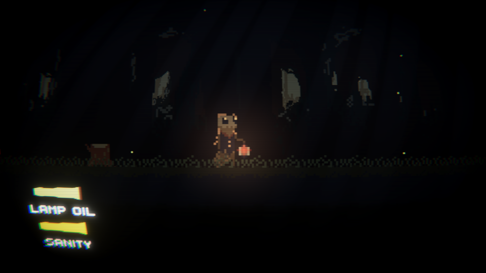
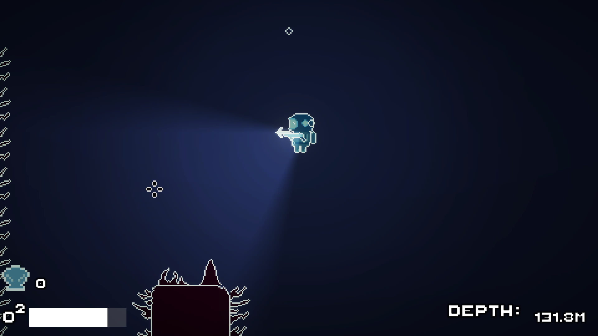
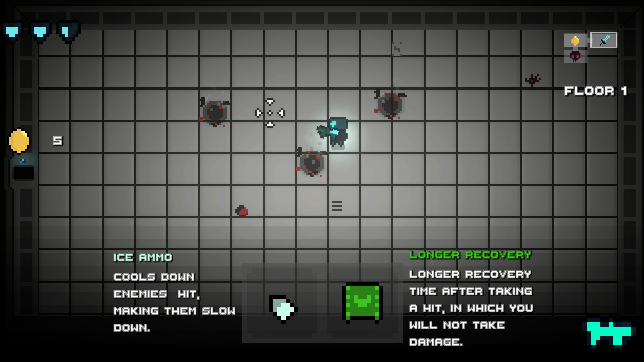

This is a list of my published videogame projects, they are ordered from most to least recent.The games mentioned below can all be played through: first-orbit
The last game I made as of the writting of this was Corn game, a simple idle clicker. I originally planed to develop it is a 4 hour time period.I just took a bath that day sat down and told myself I would finish it by 12pm(it was 8pm).Now months later, more than 30hrs spent on it.
The Agreement was a game I created for a jam before creating corn game.I had a very ambitious vision for it, but the jam required the use of only one input, as in one button. The time constraints and having to readjust to gamedev again(Had a year without gamedev due to University) caused it to be very lacklaster.It was featured in a youtubers video though which was awesome.
Depths was also a game I created for a game jam, It had the theme "diving deeper", This was my first exposure to a game jam and the feedback from players. It was pretty well liked but I didn't get may votes, hence it got the four hundred and something-th spot out of a thousand.
Cyber Rogue was the first game I actually finished and felt it was at a serviceable state. Is it a great game, no but it was a step in the right direction.
Some other games I created and published are BioTech and ZTurret, but I pulled them off the site and deleted their project files, now they are lost media.The is more than two times this worth the unfinished projects, but that's part of the process.